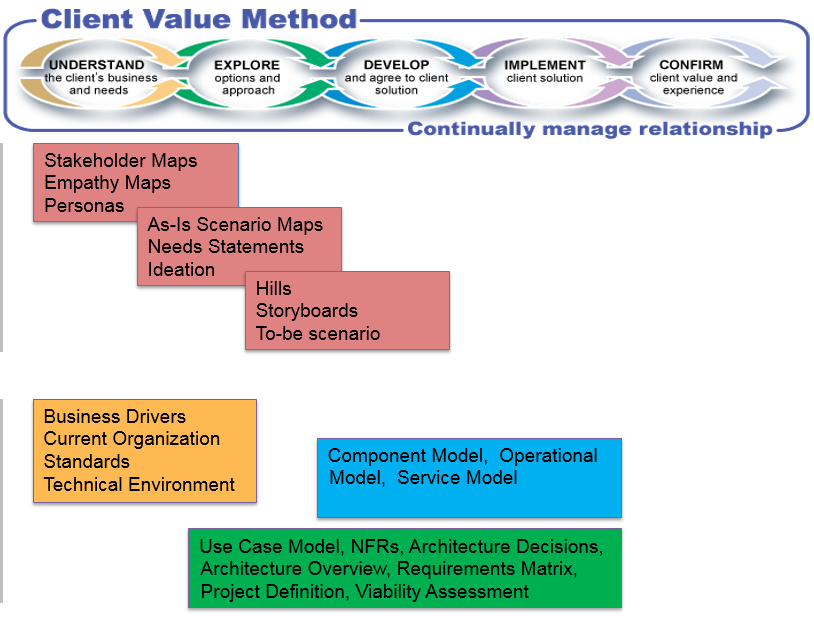

| Guideline: IBM Design Thinking and Agile with Team Solution Design |
 |
|
| Related Elements |
|---|
Objectives
|
| Traditional Mode | Agile Mode | |
| IT Projects | Some, Big | Many, Small |
| Time to go live | 2-3 years | 2-3 months |
| Solutions | Bigger Applications(including legacy) | Small apps (Cloud,mobile) |
| Change Rate | Lower | Higher |
| Governance | Centralized | Decentralized |
| Tools | Cloud-ready or on-premises | Cloud-Native |
| Primary Objectives | Ops Excellence | Transformation |
As part of understanding client needs, it is critical to understand client buyer and organizational expectations and which characteristics will drive the development and delivery approach.
With traditional development, we typically have the Big-Up-Front-Design (BUPD*) approach where an architecture is fully defined before any development of the solution begins. On the other extreme, with agile development, we have the Emergent Design* approach of evolving the design as the system is incrementally built and deployed. However, we know that some planning is needed, especially for complex architectural projects, to produce a robust system that addresses performance and usability while minimizing redundancy. This leads us to an Intentional Architecture* approach that addresses how we support and scale agile teams with a common approach and guidance while enabling us to respond efficiently to ever-changing business needs. Hence, we need an Agile Architecture approach that balances emergent design and intentional architecture to be able to support current user requirements while evolving the system to address future needs through an Architecture Runway* which provides the technical foundation for future development.
(*: from Scaled Architecture Framework)
Given the characteristics of IBM Design Thinking and the TeamSD, one might be inclined to conclude that IBM Design Thinking is more suited for agile projects while TeamSD is more for traditional SoR projects. However, as described in the next section, they are complementary and both are needed regardless of the types of systems we are building or the modes we are executing in. Remember that TeamSD is an architectural method that is agnostic of development approach.
IBM Design Thinking and TeamSD as complementary tools
Both IBM Design Thinking and TeamSD have significant value to the Technical Solution Architect and are complementary to each other. The drive toward high impact, user-centric outcomes, the hallmark of IBM Design Thinking, enhances our ability to deliver significant client value. The techniques embodied within IBM Design Thinking should always be recommended to support the Understand and Explore activities of TeamSD. One such integration of IBM Design Thinking techniques into TeamSD is highlighted within the Consultative Technical Selling Via Discovery – PoV – Customer Workshop.
Opportunities that fit within the Agile mode and are driven primarily by IBM Design Thinking and Agile delivery may require supporting architecture support for which TeamSD solutioning objectives (Explore and Develop activities) provide excellent guidance. In particular development of a Solution Outline for the architecture in advance of Playback 0 via System Context, Architecture Overview and Architecture Decisions is strongly recommended. This gives us a great opportunity to start discussing the solution outline, its shape and style options, with the stakeholders very early in the process.
Reconciling Artifacts to be produced to support Solution Design
It is extremely rare for all of the potential set of artifacts for either IBM Design Thinking or TeamSD to be produced
for an opportunity. It is important for the practitioner to determine the appropriate techniques to employ for a
particular opportunity. Note that many techniques in both approaches require the output of one technique or task
(artifact) as input to other techniques or task. This is frequently highlighted via an artifact dependency
diagram.
A hallmark of TeamSD is the iterative manner in which work products are elaborated as the sales cycle progresses.
Typically, only a high-level description and detail are needed to get client understanding and buy-in, that is then
further elaborated to a level sufficient for the solution proposal and any technical reviews, and then continued to
full elaboration during delivery.
When performing IBM Design Thinking techniques in support of Solution Design, consider the relationships between the
type of information captured in the IBM Design Thinking artifact and the related TeamSD work products as shown below.
What is revealed is a set of things that can be captured in multiple forms depending on the techniques used to capture
the relevant content. Just as one shouldn’t be overly focused on work product form such as the document template used,
one also should not be overly focused on which “form” / artifact is used to capture the content.
| IBM Design Thinking Artifact | Primary purpose or content captured | Related TeamSD artifact(s) |
| Empathy Map | An empathy map is a quick way of capturing user insights and observations. It allows us to gain empathy to develop actionable insights to create a better product and give your users a delightful experience. |
|
| Persona | A pattern that emerges about a user or collection of similar users once users are understood and empathy maps are developed. |
|
| As-Is Scenario Map | A description of the existing As-Is process as it relates to the users to further pain points and gain additional insights. |
|
| Need Statement | A statement that captures the need of a given user of the system with a clear indication to the business value that is associated with that need. | |
| Hills | A statement that frames your releases around user-centric market outcomes, not feature requests. |
|
| Storyboard | A to-be story that describes the new user experience that has a beginning, middle and an end. | |
| Prototype | A means of exploring a user experience through low-fidelity representation of a design and provides a quick and effective communication tool. |
Table 1 - Mapping IBM Design Thinking artifacts to TeamSD Work Products
The IBM Design Thinking artifacts generally cover the key TeamSD Understand activity related work products as well as many of the TeamSD Explore activity work products (those dealing with Requirements and early Viability). The Understand activity work products that are not directly supported by the IBM Design Thinking artifacts are the IT System specific content such as detailed Technical Environment and Standards. In general, the IBM Design Thinking artifacts should suffice for TeamSD work product content associated with the Understand and Explore activities. Further, where possible, it is recommended to use IBM Design Thinking techniques and resulting artifacts to support TeamSD Understand and Explore activities. Note that Hills, representing high-level business use cases can then be refined or elaborated to create System and Technical use cases as and when appropriate. More detailed NFRs along with technical functional requirements and more project detailed viability assessment will be elaborated as part of the TeamSD Develop activity. In addition, the Standards and Technical Environment details will contribute to system design elements developed during the Explore and Develop activities.
Another valuable view on artifact applicability is to visualize when specific artifacts appear within the CVM Sales cycle.

Figure 2: Artifacts in relationship to CVM Phases
Summary
Remember that TeamSD is an architecture method with focus across the complete sales lifecycle. The bulk of the application of Architectural Thinking and associated guidance aligns with the Explore and Develop activities with dependency on a strong understanding of the client needs and expectations. One of the key strengths of IBM Design Thinking approach is the ability to discover innovative ideas that can deliver exceptional user experience and strong client value.| Content Lead | Leo Marland |
|---|---|
| Change Date | Tue Dec 13 13:23:07 IST 2016 |
| Revisions | TeamSD Version 2.1 2015 |
© Copyright IBM Corp. 1987, 2016 All Rights Reserved |